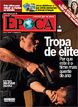

No ritmo do filme Tropa de Elite, o jornal O Dia montou uma galeria de fotos com pedaços do treinamento do BOPE, e ainda fez uma matéria mostrando que os personagens do filme são identificáveis, e mais ainda, aquela realidade se estende à muitos policiais, notadamente os que procuram fazer um trabalho sério.
Já o jornal Extra nos presenteou com dois vídeos: um vídeo explicando a formação do praça da PMERJ, ao mesmo tempo em que mostra a precariedade do material de trabalho e abandono do policial depois de formado, com viaturas caindo aos pedaços, coletes balísticos inapropriados, e as demais mazelas que o Governo do Estado do Rio mantém nos últimos anos de des-governo PMDB, acredito que propositalmente.
A revista Época também fez matéria sobre o filme, lembrando da crítica feita aos detentores das riquezas e usuários de drogas que indiretamente criam e mantém o sistema funcionando, e tenta explicar o porque do sucesso antes mesmo de ser lançado e divulgado oficialmente.Outro vídeo intitulado "Conheça melhor o BOPE" fala sobre o treinamento do BOPE com uma abordagem superficial.
O jornal britânico Guardian Unlimited também fala sobre o Tropa : "Tiroteios, execuções sumárias, sessões de torturas e corpos queimando dentor de pneus. Pode parecer o noticiário jornalístico do Rio, uma cidade com a violência em crescimento, mas são cenas do filme Tropa de Elite, ou Elite Squad". Informam ainda que o Rio é a capial do Brasil.
Mais um vídeo sobre o filme Tropa de Elite, dessa vez do programa Fantástico da rede globo, que mostra os bastidores da filmagem e cenas de quando as armas cinematográficas (alguma de verdade inclusive) foram roubadas durante gravações na favela, sendo que a CORE teve que ir resgatar os atores sequestrados pelos traficantes. Só faltava dizer aos editores do programa global que "ex" de "ex-capitão" não se escreve com "S" (es-capitão). Mas eles devem saber, afinal também sabíamos que "policiais civis" não leva acento (cívis), como ficou erroneamente grafado nos coletes de greve, e o site G1 não perdoou. Erro de digitação. Acontece né globo...
Enfim, vale a visita.